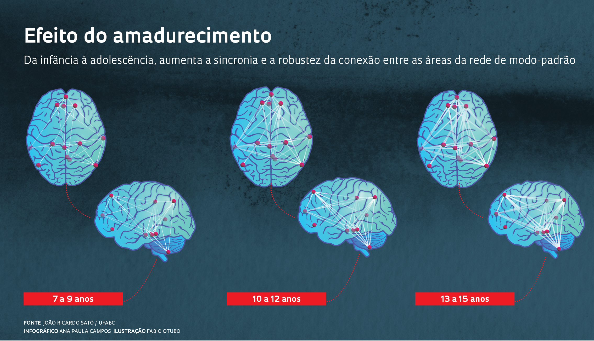

A adolescência é uma fase marcada por intensas transformações físicas, emocionais e sociais. Os jovens
passam por um processo de construção de identidade, buscando autonomia e pertencimento em diferentes
grupos.
O diálogo é fundamental
para a saúde emocional
dos adolescentes.
🧠 Desenvolvimento Cognitivo e Emocional
Durante a adolescência, o cérebro está em fase final de amadurecimento. A área responsável pela empatia,
planejamento e controle de impulsos, o córtex pré-frontal, ainda está se desenvolvendo.
- Maior propensão a comportamentos impulsivos e de risco.
- Busca intensa por identidade e afirmação.
- Desenvolvimento da empatia e do pensamento crítico.

🏫 Papel da Família e da Escola
Ambientes familiares e escolares acolhedores, com escuta ativa, são cruciais para o crescimento emocional
do adolescente.
- Estabelecer limites claros, mas com diálogo.
- Valorizar a autonomia com responsabilidade.
- Promover espaços de escuta e expressão.